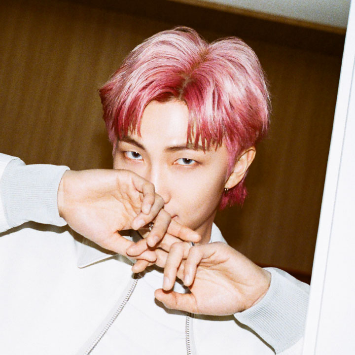
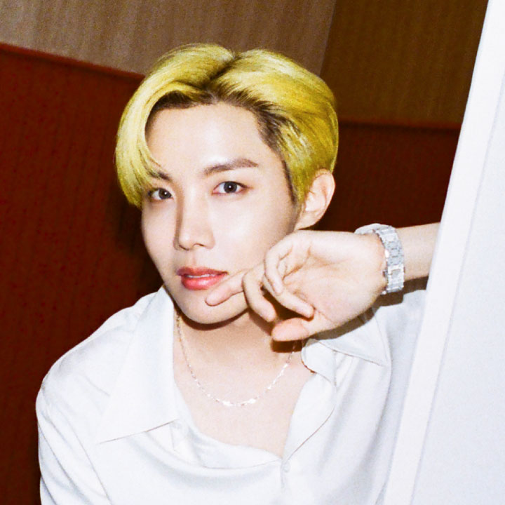
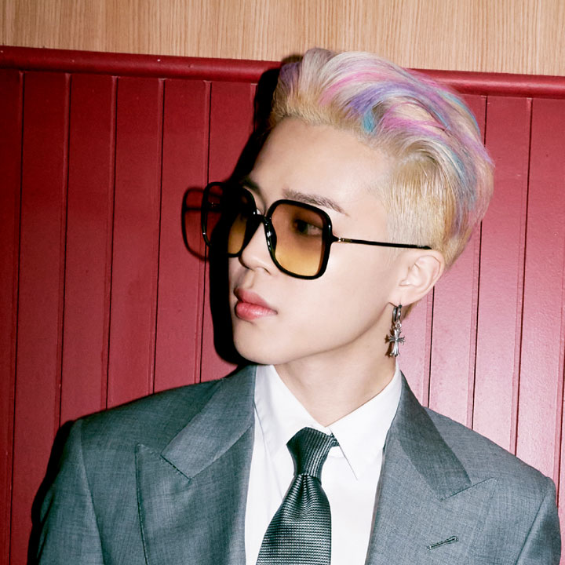
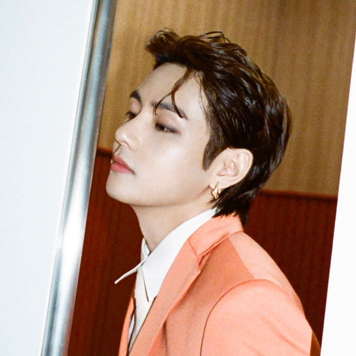
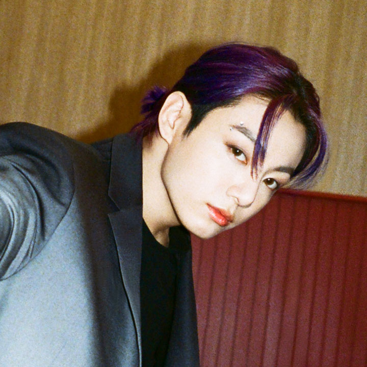

Ким Намджун, RM

День рождения: 12.09.1994
Намджун является лидером группы. Он был в первоначальном составе BTS, остальных участников группы подбирали под его стиль. Намджун автор лирики и музыкальный продюсер.
В группе занимает позицию главного рэпера. Его стиль повествования сложный, он использует длинные предложения и множество метафор. Намджун единственный мембер BTS, свободно говорящий на английском.
Ким Сокджин
День рождения: 04.12.1992
Джин – самый старший участник группы, из-за чего он чувствует большую ответственность за младших ребят. Иногда мемберы в шутку называют его матерью группы.
Он вижуал (лицо группы) и главный вокалист BTS.
В феврале 2016 известный пластический хирург изучал лица знаменитостей с помощью программы, способной вывести идеальные пропорции. Заключением исследователя стало то, что лицо Ким Сокджина математически идеально. С этого момента Джин стал часто называть себя Worldwide Handsome.
Мин Юнги, Suga
День рождения: 09.03.1993
Юнги один из рэперов группы. Его скорость начитки самая высокая среди мемберов, хотя парень немного шепелявит.
До того, как попал в агенство, Юнги был андерграундным рэпером. Он с детства занимался написанием текстов и работой со звукозаписывающей аппаратурой. С дебютом группы его хобби стали частью профессиональной деятельности.
Под псевдонимом Agust D Юнги выпустил два сольных микстейпа, в которых открыл многие мысли, которые не мог выпустить под официальным лейблом.
Юнги пережил депрессию и тревожное расстройство, он открыто делится опытом с фанатами, поддерживая тех, кто переживает такие же непростые ситуации.
Чон Хосок, J-Hope

День рождения: 18.02.1994
Хосок был широко известен в своем регионе как андерграундный танцор, он не раз участвовал в баттлах и выходил победителем.
В группе он отвечает за танцевальную часть выступлений. Кроме того, он третий рэпер, его стиль – короткие отрывистые фразы.
В 2018 году он выпустил сольный микстейп Hope World, вдохновленный научной фантастикой, в частности книгами Жюля Верна.
В 2019 году с певицей Becky G он выпустил трэк Chicken Noodle Soup — ремейк песни середины двухтысячных от Webstar и Young B. Песня быстро стала популярной, получив первые строки iTunes в 72 странах.
Пак Чимин

День рождения: 13.10.1995
Чимин – вокалист и один из ведущих танцоров группы. Он обладает самым высоким тембром в группе. До попадания в BTS Чимин занимался классическими танцами и боевыми искусствами. В агенстве он оказался одним из последних и до самого дебюта было неизвестно, попадет ли он в финальный состав.
Если J-Hope отвечает за хип-хоп составляющую композиций, то Чимин предпочитает более плавные стили, контемп и латину.
Ким Тэхен, V

День рождения: 30.12.1995
Тэхен родился в небогатой семье, где было много детей. Он с детства занимался музыкой, играл на саксофоне, фортепиано и скрипке. Тэхен случайно попал на прослушивание в агенство, придя туда, чтобы поддержать своего приятеля.
У него низкий глубокий тембр, идеально подходящий для медленных плавных композиций.
В 2017 году он снялся в исторической дораме Хваран: начало, где играл богатого юношу, который попал в академию Хваранов – элитной армии ее величества. Вместе с Сокджином Тэхен записал саундтрек к дораме.
Чон Чонгук, JK

День рождения: 01.09.1997
Чонгук самый младший мембер BTS. Он решил вступить в группу, потому что его вдохновили работы RM. Чонгук – «золотой макнэ» (макнэ – младший член группы), потому что ему одинаково хорошо удаются рэп, пение и танцы.
Чонгук творчески одаренная личность. Он с детства увлекался рисованием и танцами, а после дебюта продолжил совершенствовать свои навыки.
Также, как и остальные участники группы, Чонгук записал несколько сольных трэков, для которых сам создавал музыку и текст.